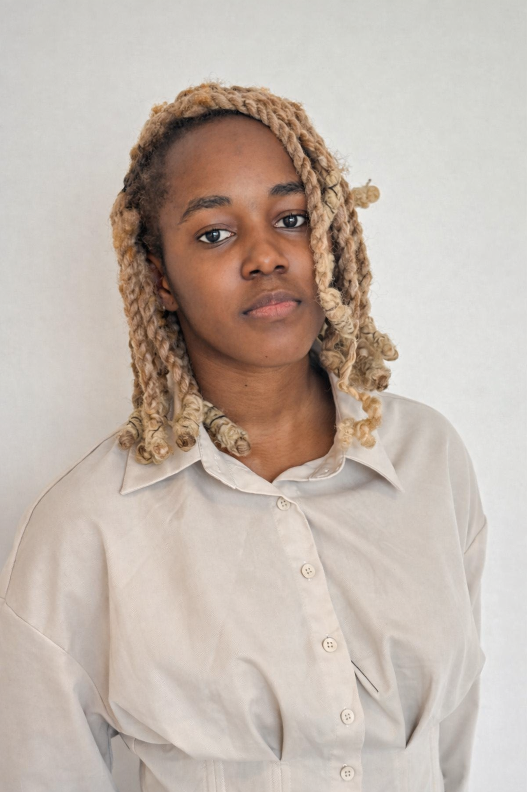
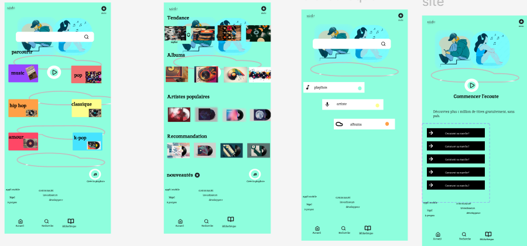
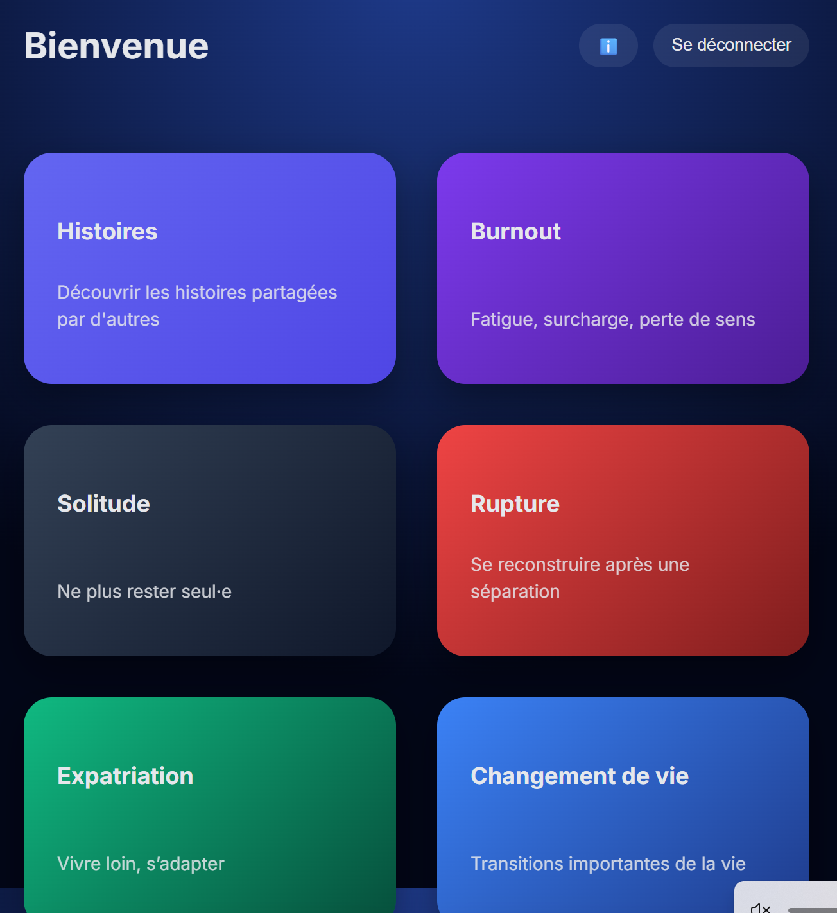
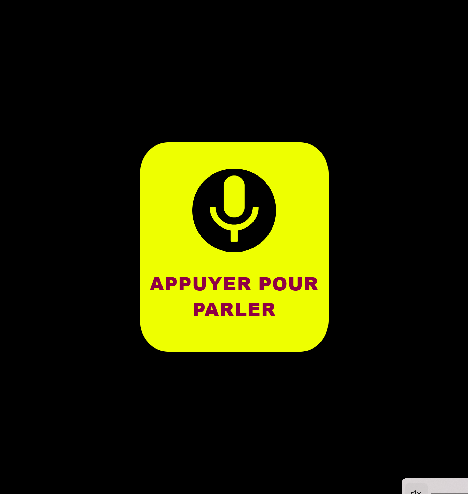

Conception
Figma
Wireframes
Design System
Prototypage
Webdesigner / UI Designer
Je conçois des univers digitaux pour le web et le mobile, avec une attention particulière portée à la direction visuelle, à la hiérarchie éditoriale et à la fluidité des parcours.

Direction visuelle
Un portfolio pensé comme une expérience éditoriale, pas comme une simple liste de stacks techniques.
Parcours
Design & Création : UX/UI Design, Wireframing, Mobile-First, Design System, Prototypage interactif, Branding / Identité visuelle
Une approche orientée interface, cohérence de marque et expérience utilisateur, avec une base technique utile pour dialoguer avec les équipes de développement.
Sensibilité
Conception
Direction artistique
Culture produit
Portfolio
Des concepts visuels et des interfaces pensées pour raconter une marque, structurer un parcours et créer une ambiance digitale forte.

À la une
Exploration visuelle d'une application musicale mobile pensée comme une expérience fraîche, pop et intuitive, avec plusieurs écrans de navigation et de lecture.

Création complète de l'identité de marque et de l'expérience utilisateur. Recherche utilisateur sur la gestion de l'anonymat, conception du Design System sur Figma et intégration Pixel-Perfect en React/Vue.js.
Voir le site
Projet de Product Design centré sur l'accessibilité numérique (normes RGAA). Conception d'une interface utilisateur inclusive et adaptative, prototypage des parcours et interactions vocales.
Voir le siteContact
Je recherche une alternance à partir de septembre 2026, avec un portfolio pensé pour des marques, des studios créatifs et des équipes produit sensibles à l'image.
Me contacter